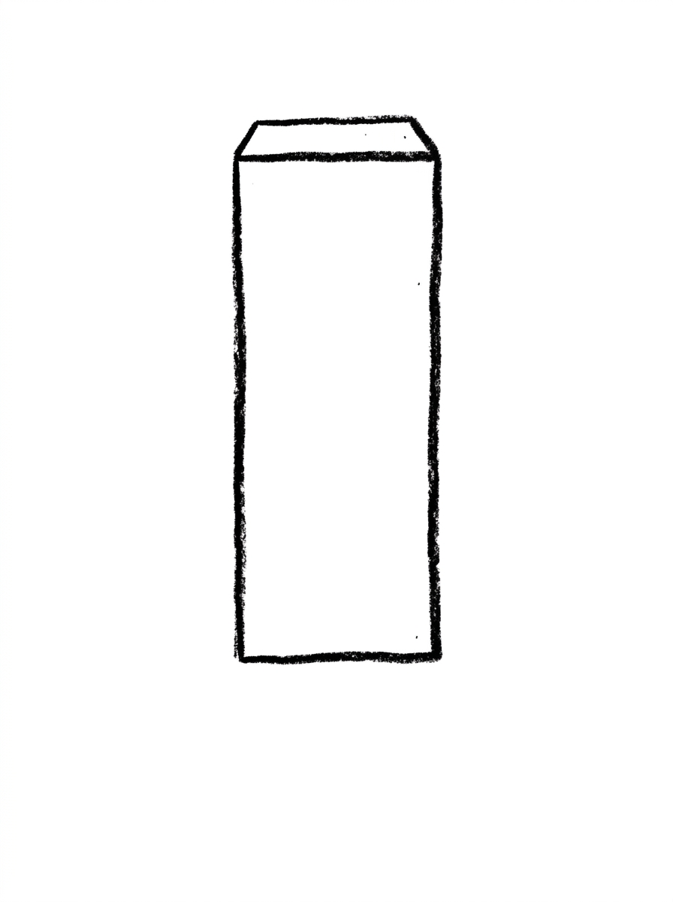
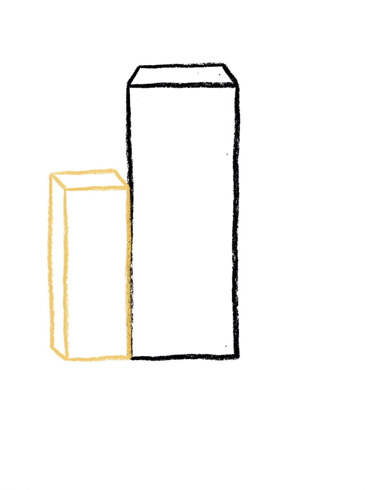
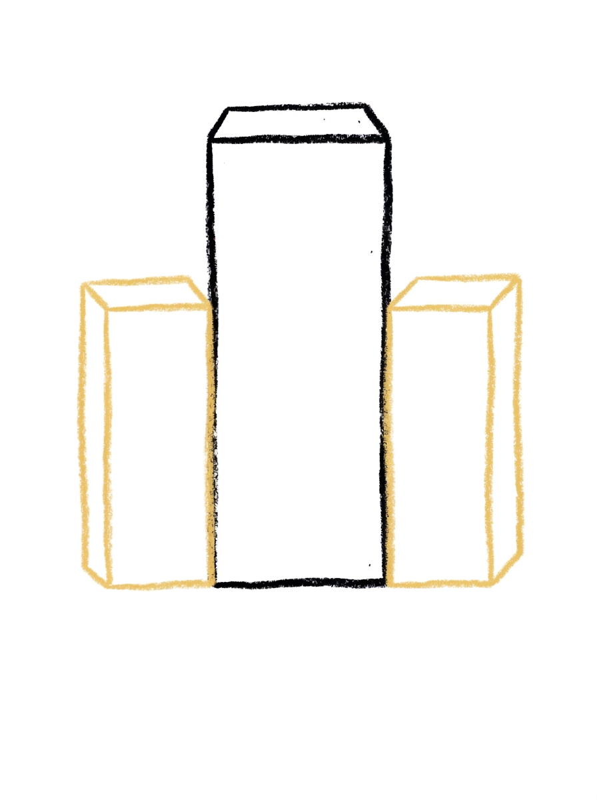
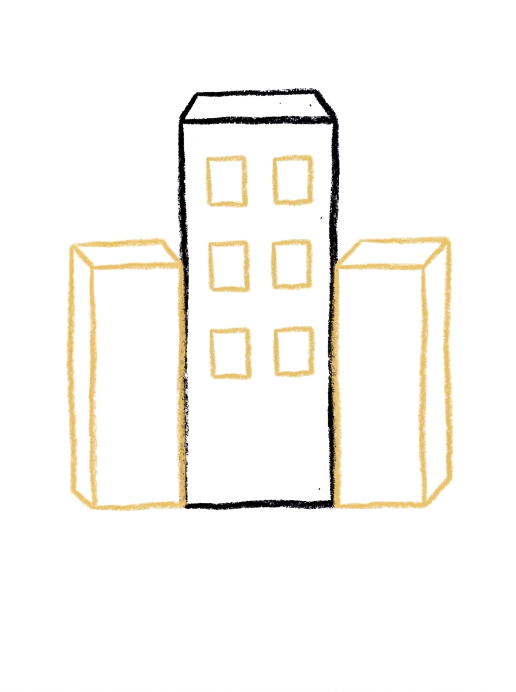
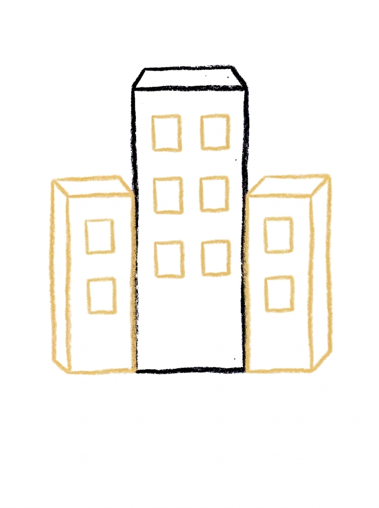
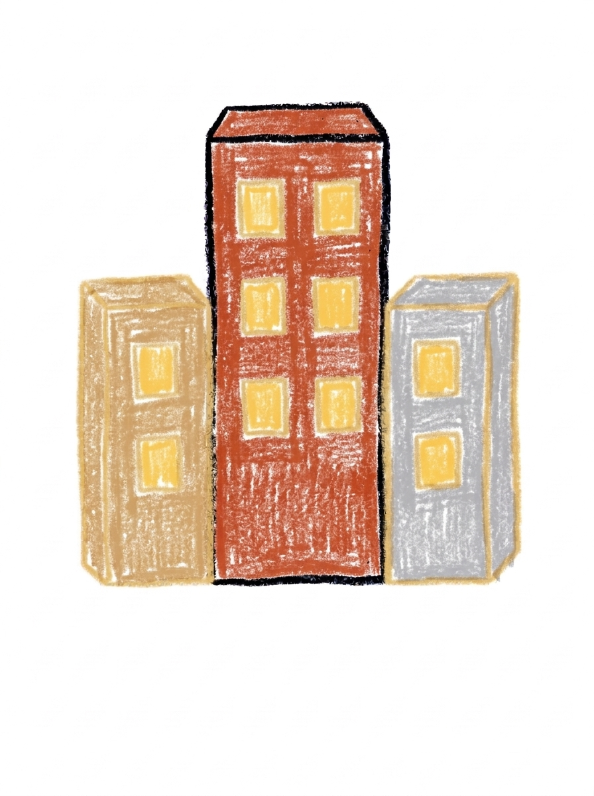

City Drawing for Kids How to Draw A City in 6 Easy Steps
Quick Answer
Draw a city in six easy steps: one tall building in the middle, a shorter building on each side, then small square windows — six on the tall building and two on each side one. Color them brick red, tan and grey. For ages 3 and up — free, no signup needed.
At a Glance
- Subject: How to draw a city
- Ages: 3+
- Steps: 6 steps
- Time: ~15 min
- Difficulty: Easy
- Supplies: Paper, crayons
A whole city sounds like a big drawing, but this one is secretly simple — it's just three rectangles standing in a row, with little square windows to light them up. If your child can draw a rectangle and a square, they can draw this cheerful city skyline.
✏️ Draw Your City in 6 Easy Steps
One step per box — this step by step city drawing shows each new part in a different color so kids can see exactly what changed.
Step 1: The Tall Building

Draw one tall upright rectangle in the center — that's the tallest building.
Step 2: The Left Building

Add a shorter rectangle attached to the left side of the tall building.
Step 3: The Right Building

Add another shorter rectangle attached to the right side.
Step 4: The Tall Building's Windows

Draw six small squares in the tall building — two columns of three.
Step 5: The Side Windows

Draw two small squares, one above the other, in each side building.
Step 6: Color It In

Color the tall building warm brick red, the left building warm tan, the right building soft gray, and all the windows warm yellow. Great drawing!
📊 City Drawing by Age
Every age can join in — just adjust the job.
| Age | What they can do | Tip |
|---|---|---|
| 3-4 | Draw the tall middle building and color the finished city's windows warm yellow. | Start the tall building in the center of the page — the two side buildings need room to attach on the left and right. |
| 4-5 | Add the shorter building on each side and the two stacked window squares in each side building. | Keeping the side buildings shorter than the middle one is what gives the skyline its up-and-down rhythm. |
| 6+ | Finish all six steps, including the tall building's six windows in two neat columns of three. | Counting the windows — six on the tall building, two on each side, ten in all — turns the detail step into a tidy math moment. |
🖨️ Download Your Free City Drawing Printable
The printable lays out all 6 steps one per box, big enough for little hands — kids draw right alongside each step.
⬇️ Open Free Printable 🖨️ Print🎁 Free printable for ages 3+
🏙️ City Skyline Page
Grow your city into a whole skyline: add a road along the bottom with a tiny car, a sun or moon over the rooftops, and a few stars, clouds, or birds in the sky, then decide together what kind of city this is — a sleepy small town, a superhero headquarters, or the street where your family lives. Write one sentence about the city under the drawing (or dictate it for a grown-up to write) and the picture becomes a map your child can keep building on.
What You'll Need to Draw A City
All you need is a pencil, an eraser, and crayons or markers. For the colors in the tutorial, have warm brick red ready for the tall building, warm tan for the left building, soft gray for the right building, and warm yellow for all the windows. Regular printer paper or a sketchbook both work.
What They're Learning
This tutorial practices upright rectangles in three heights and small squares placed in columns — great grid and alignment practice. Kids also work on counting with a real total to check (six windows plus two plus two makes ten), left-right symmetry in the skyline's shape, and sequencing: structure first, details last.
Make It Yours
Try a night city with a dark sky, a moon, and every window glowing yellow, a sunset city with an orange and pink sky, a snowy city with white rooftops, or a super-skyline with extra buildings marching off both sides of the page. Adding a road with a tiny car and a traffic light turns it into a full street scene.
🛒 Our Favorite Drawing Supplies
These are the supplies we reach for in our own home — washable (because kids), quality paper, and enough colors to avoid fights.
As an Amazon Associate, MomYouNeedThis earns from qualifying purchases — at no extra cost to you.
💡 City Drawing Tips for Parents
The windows in steps 4 and 5 are the fiddly part: six squares in two columns of three on the tall building. Have your child draw the left column top to bottom first, then match the right column to it square by square — matching a neighbor is much easier than measuring. Slightly uneven squares just look like different-sized windows in a real building.
Keep the two side buildings clearly shorter than the middle one. If a side building grows to the same height, the skyline flattens out and the 'tallest building' moment is lost — a quick fix is extending the center building's roof line a little higher before the windows go in.
🏙️ Real Cities and Their Tall Buildings
A city is a place where lots of people live and work close together, and its tallest buildings have a name kids love: skyscrapers. The first skyscrapers went up a little over a hundred years ago, when steel frames and elevators made it possible to build up instead of out. Some of today's tallest towers have more than a hundred floors.
Every window in a city building is a room where somebody is doing something — cooking, sleeping, working, watching the street below. That is a lovely thing to point out while your child draws window rows: behind every little square, a story. Ask which window is theirs.
✋ Warm-Up: Window Grids
Warm up with the city's favorite pattern: the grid. Draw a big rectangle on scrap paper and fill it with rows of little squares — tic-tac-toe boards stretched tall. Count the squares when you finish; kids who count their windows tend to place them straighter in the real drawing. A second grid, drawn faster and smaller, builds the rhythm.
A square that leans is just a window with character, and cities are full of odd windows. The fix that matters is running out of room: if the grid reaches the paper's edge, the building simply gets a twin beside it. Cities grow exactly that way.
📖 Give Your City a Story
Cities run on the people inside them. Ask your child: who lives in the tallest building, and what is the little building beside it — a bakery, a library, a fire station? A dictated sentence or two under the skyline turns rows of rectangles into a place with residents.
The church tutorial adds the city's oldest landmark. Drawing the church next gives the skyline a neighbor with a completely different silhouette — and a good conversation about how real towns mix the tall and the small. Zoom into the city with its tallest landmark in how to draw the eiffel tower, or its oldest building in how to draw a castle.
❓ City Drawing FAQs
What is the easiest way to draw a city?
Start with one tall rectangle in the center, then attach a shorter rectangle on each side, and finish with small square windows — six on the tall building and two on each side building. The six steps turn a whole city into three rectangles and ten little squares.
What age is this city drawing for?
It's made for ages 3 and up. Rectangles and small squares are the friendliest shapes there are, and younger kids can do the buildings and coloring while older kids line up the window columns themselves.
What supplies do we need?
A pencil, an eraser, paper, and crayons or markers. For colors you'll want warm brick red for the tall building, warm tan for the left building, soft gray for the right building, and warm yellow for all the windows.
Is the printable really free?
Yes — every printable on MomYouNeedThis is 100% free, including this city drawing tutorial. There is no signup, no email, and no catch — just download, print, and draw.
How do I print it?
Open the PDF and choose Print, then set the scale to 100% (sometimes called Actual Size) so the steps print at full size. The tutorial is designed for regular US Letter paper, and plain printer paper works perfectly.
How many windows does the tall building have?
Six: two columns of three, like buttons on a coat. Keeping them in two tidy columns is what makes the tall building look like a real tower block instead of a building with random holes.
How many windows do the side buildings have?
Two each — one small square above the other. The side buildings are shorter, so two windows fit their height, while the tall building's extra height earns it six. Ten windows in total across the whole city.
Why do the buildings touch each other?
It does — all three buildings share edges with no gaps, so they read as one city block in front of you rather than three separate houses. The different heights and different colors in step 6 still keep each building easy to tell apart.
📚 Keep Exploring
- ✏️ All 76 Drawing Tutorials 76 free step-by-step drawing tutorials for kids.
- 🚗 Vehicle Coloring Free vehicle coloring pages for kids.
- ✏️ Drawing Practice Free printable drawing pre-writing worksheet for toddlers.